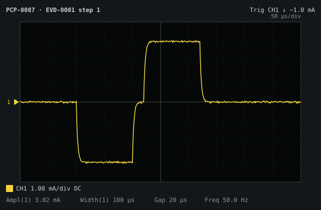
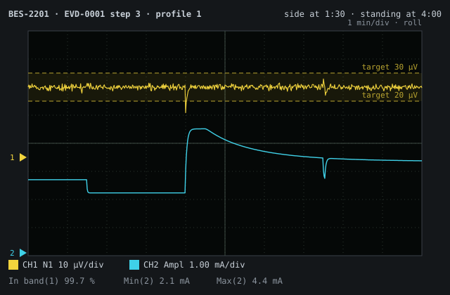
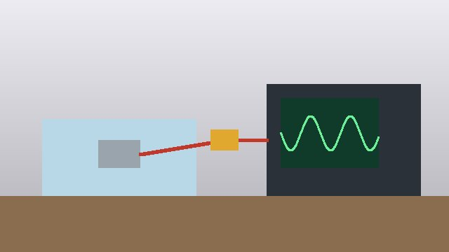
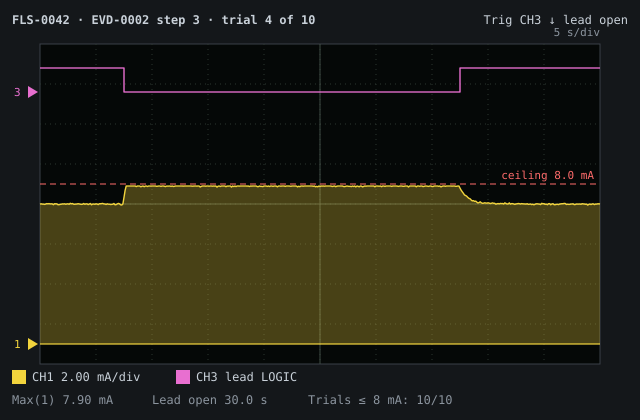

This document is the verification report for amplitude control. Each
result is a Verification Evidence entity (EVD-), shown here by a live
query block (provenance-ddf DES-0032), and the builds and equipment are
gathered from them the same way. The sections that check for failures,
missing executions and deviations are queries too, so an empty section is
a clean result rather than an author's assurance.
Purpose
To record the execution of the procedures in DOC-0004, on which build
of the device and with which equipment, and to conclude whether the
amplitude control requirements are verified.
Scope
This report covers every recorded execution of the approved procedures in
DOC-0004. The procedures executed:
Requirements outside DOC-0004's scope are outside this report's too.
Device Under Test
The builds the procedures were executed on: the device under test and the
version of it actually tested, each listed once with the executions run on
it, in Table 1:
Table 1 Devices under test, by the build actually tested.
The equipment the executions used, each listed once with every unit of it
used — serial number, calibration due date and the execution — in
Table 2. Each unit is an equipment record on the execution,
linked to the equipment DOC-0004's procedures say they need:
FLS-0042 · calibration due 2026-10-15 · used in EVD-0002
Results
Every execution, in the order it was run, with each step of its protocol
beside the result recorded for it:
EVD-0001 Execution record — closed-loop amplitude adjustment bench test
pass · executed 2026-08-04 · tests VER-0001 at commit 145edd3
Build tested
BLD-0001: Pulse generator, engineering build B, HW rev B, FW 1.3.0 — a build of CMP-0001
Steps
Step
Description
Acceptance criteria
Result
Pass/Fail
Place the implant in the saline tank, connect its sense electrode to the bench ECAP simulator and clip the precision current probe onto the stimulation lead. Program a fixed amplitude of 3 mA in open loop.
The simulator detects an evoked response on every stimulation cycle, and the probe reads 3 mA ± 2 %.
Evoked response on every cycle; probe read 3.02 mA, as in
Figure 1.

Figure 1 One stimulation pulse on the current probe (PCP-0087), 1 mA/div, 50 µs/div. Each phase 3.02 mA for 100 µs, 20 µs apart.
pass
Configure the target band from the clinician settings and enable closed-loop control.
The implant reports closed-loop mode, and the target band it reads back matches the band configured.
Closed-loop mode reported; target band read back as configured.
pass
Replay response profile 1, posture change from supine to standing, for 10 minutes.
The evoked response is within the target band on at least 99 % of cycles, and delivered amplitude stays within the configured range.
Within the target band on 99.7 % of cycles; amplitude 2.1–4.4 mA. The
only excursions are at the two posture changes, in
Figure 2.

Figure 2 Profile 1 over 10 minutes. The evoked response (CH1) stays in the shaded target band while delivered amplitude (CH2) falls when the patient rolls onto one side and rises on standing.
pass
Replay response profile 2, a slow increase in neural sensitivity, for 10 minutes.
The evoked response is within the target band on at least 99 % of cycles, and delivered amplitude stays within the configured range.
Within the target band on 99.8 % of cycles; amplitude 2.6–3.9 mA.
pass
Replay response profile 3, transient responses from coughing, for 10 minutes.
The evoked response returns to the target band within 5 cycles of each transient, and delivered amplitude stays within the configured range.
Back in the target band within 3 cycles of every transient; amplitude 2.4–4.1 mA.
All three response profiles held within the configured target band across
a 30-minute run. No anomalies observed. The set-up is shown in
Figure 3.

Figure 3 Bench set-up. The implant in a saline tank drives the ECAP simulator; the current probe (PCP-0087) feeds the oscilloscope.
EVD-0002 Execution record — single-fault amplitude ceiling bench test
pass · executed 2026-08-11 · tests VER-0002 at commit 145edd3
Build tested
BLD-0002: Pulse generator, engineering build B2, HW rev B, FW 1.3.1 — a build of CMP-0001
Steps
Step
Description
Acceptance criteria
Result
Pass/Fail
Connect the implant's sense electrode through the fault-injection lead simulator, with its current monitor on the stimulation lead. Enable closed-loop control with the amplitude at its configured maximum.
The current monitor reads the configured maximum amplitude, within ± 2 %.
Current monitor read 7.04 mA against a configured maximum of 7 mA.
pass
Through the test interface, command an amplitude of 10 mA, above the ceiling.
Delivered amplitude does not exceed 8 mA.
Delivered amplitude held at 7.9 mA; the ceiling engaged.
pass
Disconnect the sense electrode during active stimulation, hold for 30 seconds and reconnect. Repeat for ten trials.
Delivered amplitude does not exceed 8 mA at any time in any of the ten trials.
Peak delivered amplitude 7.9 mA across the ten trials. Every trial
looked like trial 4, in Figure 4: with the lead open
the loop drives amplitude up, and the hardware limit holds it below
the ceiling until the lead is reconnected.

Figure 4 Trial 4 of 10 on the lead simulator (FLS-0042), 2 mA/div, 5 s/div. Delivered amplitude (CH1) against the 8 mA ceiling of REQ-0002 while the sense lead (CH3) is open for 30 s.
Executed against the protocol as revised by ECO-0001, including the
lead-disconnection fault-injection step. Delivered amplitude did not exceed
7.9 mA across ten trials. Had BLD-0002's build_date been after this
execution's, rules/evidence-after-build.yaml would flag it.
Executions that did not pass, by ID:
No VerificationEvidence matches this query.
Executions with a step that did not pass, whatever their overall result:
No VerificationEvidence matches this query.
Completeness
Approved procedures with no recorded execution:
No VerificationProtocol matches this query.
Deviations
Executions recorded before the build they name was built
(rules/evidence-after-build.yaml):
No VerificationEvidence matches this query.
Each execution records the commit of the protocol it ran against
(protocol_commit). Whether a procedure has changed since is not yet a
check this report can make: it needs the protocol's git history in a
query, which is still to be designed (provenance-ddf DES-0016).
Executions using equipment whose calibration was due before the test was
run (rules/equipment-calibration-current.yaml):
No VerificationEvidence matches this query.
Conclusion
While the sections above are empty, every procedure in DOC-0004 has
passed, on builds that existed when it ran and with calibrated equipment,
and
REQ-0001 and REQ-0002 are verified by test. EVD-0002 is the
evidence the risk-benefit analysis of RSK-0001 waits on: delivered
amplitude stayed under the 8 mA ceiling with the sense electrode
disconnected, the single-fault condition of [1]. Re-assessing the
residual risk belongs to the risk file, not to this report.
DOC-0004: Verification Protocol — Amplitude Control
External
Medical electrical equipment — Part 1: General requirements for basic safety and essential performance. IEC/TC 62 (International Electrotechnical Commission, 2020). IEC 60601-1:2005+AMD1:2012+AMD2:2020. (REF-0002)
Revision history
Commit
Date
Author
Change
3dd7c6b
2026-10-18
Matt Williams
Merge pull request #16 from dynamatt/verification-protocol-report
3f4b916
2026-10-18
Matt Williams
Merge commit '8068898d3c091ab9a85d211d7a09eb61fc4a1018' into epic/E2-validate
58b2168
2026-10-11
Matt Williams
Merge pull request #12 from dynamatt/task/E2.1-validate-design
55388be
2026-10-10
Matt Williams
Merge pull request #10 from dynamatt/ddf-references
1b28c4c
2026-10-08
Matt Williams
Merge pull request #9 from dynamatt/cite-template
b617654
2026-10-06
Matt Williams
Merge pull request #8 from dynamatt/references
bd98829
2026-10-04
Matt Williams
Merge pull request #7 from dynamatt/scope-git-captions
54de84f
2026-10-03
Matt Williams
Add ValidationEvidence, reusing the Equipment record
b6dfc5c
2026-10-03
Matt Williams
Lists that name their type: a record, an enum and a built-in type
4cf41f1
2026-09-28
Matt Williams
Make templates/ functional: Requirement page, layout, index, stylesheet
7aee1f1
2026-09-28
Matt Williams
Declare the verification link on the VerificationProtocol side instead
f1c5fe4
2026-09-28
Matt Williams
Declare the verification link once, on the Requirement side